Гайд на установку сборки и скины
Сборка от Алисы
Сборка от вайта (c модами на оптимизацию и qol)
ely.by - это система скинов независимая от Mojang, проще говоря можно играть со скинами без лицухи.
Заходим на сайт, регаем аккаунт и ставим скин.
Зайти на сервер можно и без ely, но тогда не будет скинов.
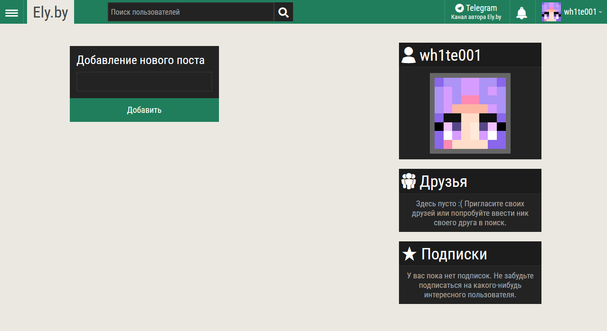
Лаунчер
Для того что бы играть с этим аккаунтом ely и легко установить сборку надо скачать ElyPrismLauncher - форк PrismLauncher с возможностью игры с аккаунта ely.by, без лицензии.
Ссылка на установщик для Windows
Другие релизы
Установка и настройка лаунчера
- Запускаем exe файл
- Выбираем Visual Studio Runtime (необходимая библиотека)
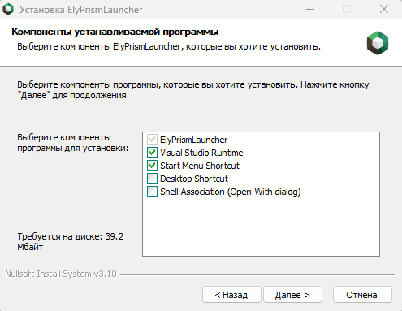
- Выбор папки - нажимаем установить
- Дожидаемся установки и запускаем лаунчер
- Если ранее был установлен обычный PrismLauncher, то новый предложит мигрировать данные со старого лаунчера
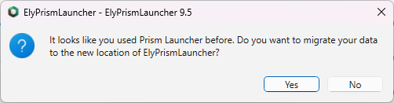
- Выбираем язык
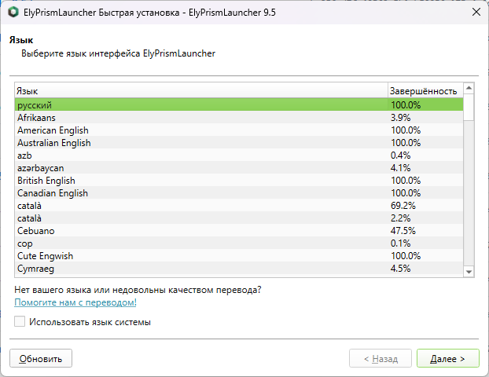
- Тему, иконки приложени
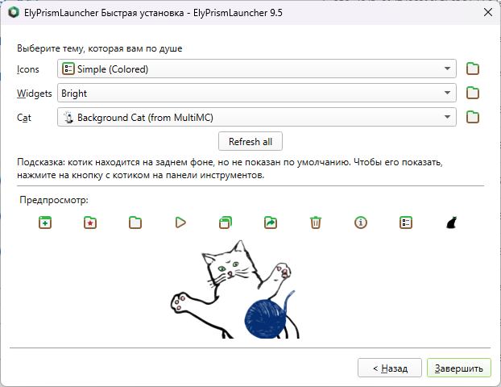
- Мы зашли в лаунчер. Нажимаем "Учетные записи" - "Управление учетными записями" - "Add Ely.by" что бы добавить свою учетную записть ely.by
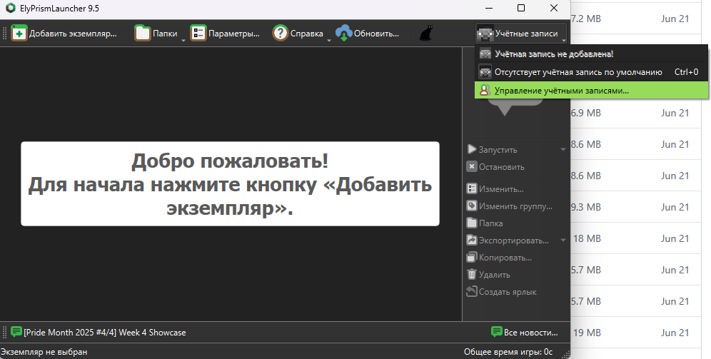
Нажимаем "Sign in with Ely.by". Переходим на сайт, выбираем аккаунт и возвращаемся обратно в лаунчер.
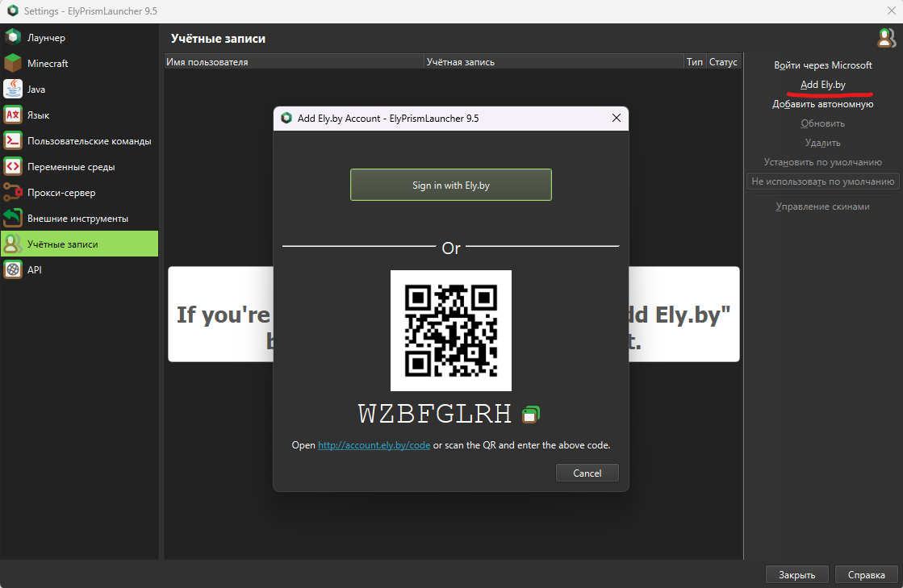
Добавление сборки в лаунчер
- Переходим на главный экран, нажимаем либо "Добавить экземпляр..." либо пкм по центральному полю и в контекстном меню выбрать "Создать экземпляр"

- Открываем вкладку "Импорт", нажимаем кнопку "Обзор"

И выбираем в проводнике сборку (.zip)
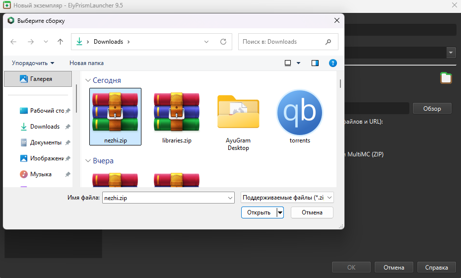
Нажимаем открыть и OK
Сборка установлена. Что бы запустить надо еще скачать Java.
- Нажимаем "Изменить" выбрав сборку в меню и открываем "Параметры"
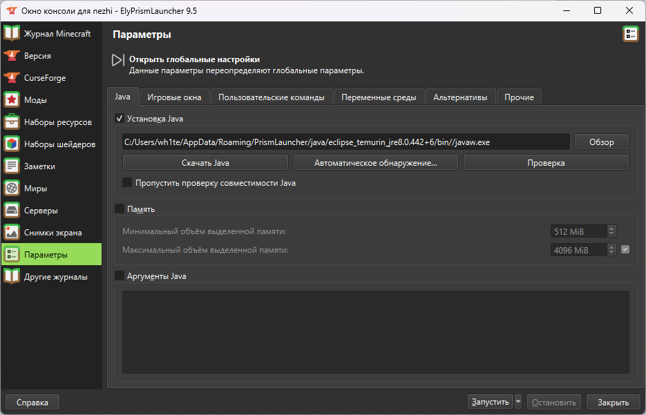
Если у вас скачана Java, то можно выбрать ее нажав "Автоматическое обнаружение..." и выбрав джаву 8 версии.
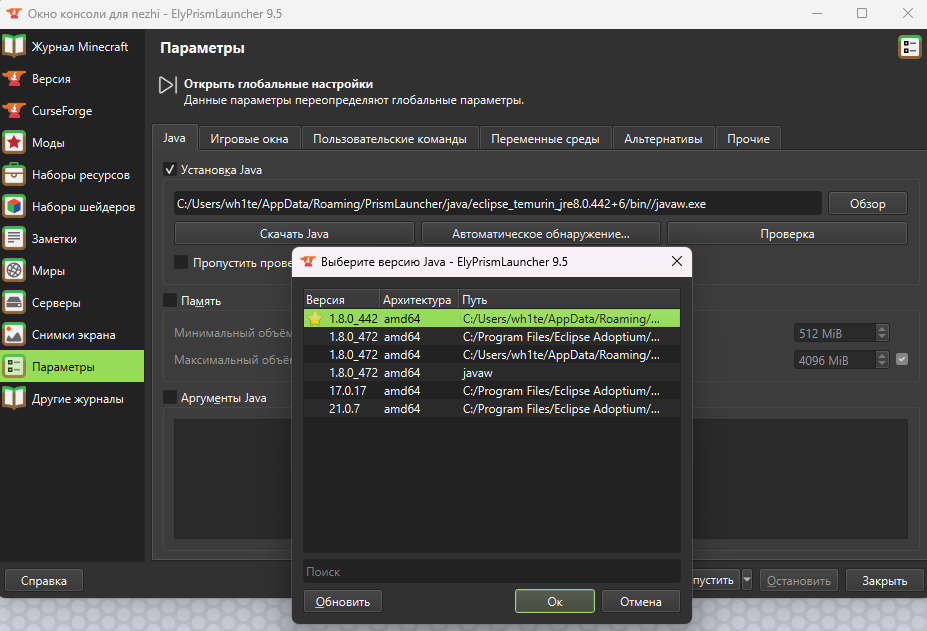
Если джава не установлена, то нажимаем "Скачать Java", Adoptium и выбираем последнюю версию, нажимаем "Скачать"
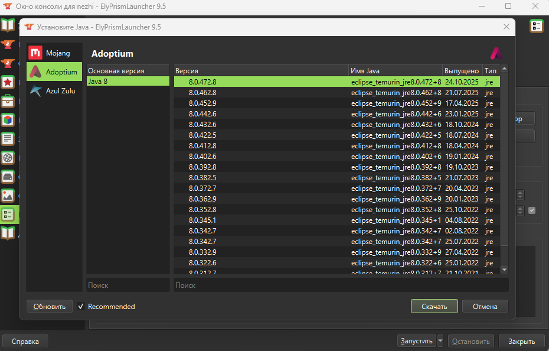
Можно выбрать и другую, но я рекомендую Adoptium.
Так же в параментрах можно настроить оперативную память
- Запускаем сборку выбрав её и нажав кнопку "Запустить". Дожидаемся пока лаунчер докачает нужные ресурсы и ждем запуска игры.
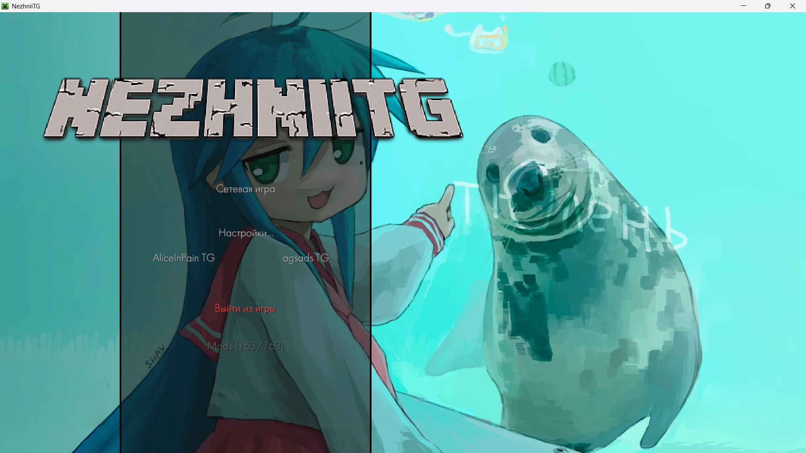
Дополнительно (сборка вайта)
Шрифт можно поменять зайдя в мир и нажав кнопку Home, откроется меню мода SmoothFont. Иногда мод не видит скачанные с интернета шрифты, поэтому их надо кинуть в папку .minecraft/fontfiles/